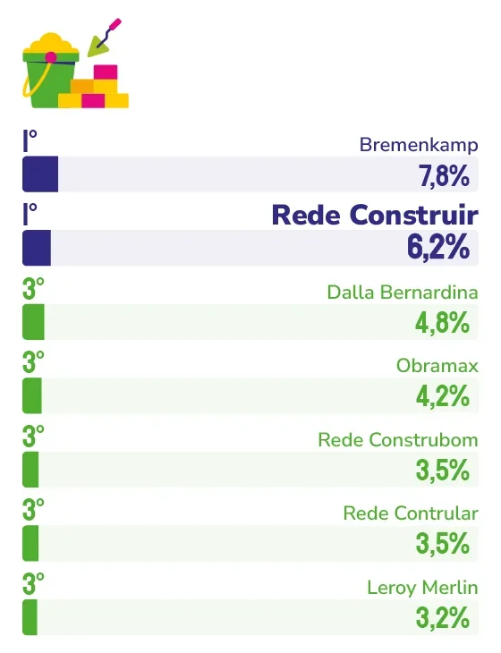

MATERIAL DE CONSTRUÇÃO
REDE CONSTRUIR
Presença constante na vida dos capixabas e atendimento próximo explicam por que a Rede Construir segue entre as mais lembradas no segmento de material de construção.
Quando um capixaba decide construir a casa própria, fazer uma reforma ou dar o primeiro passo na direção de um sonho, é comum que a Rede Construir esteja entre os primeiros nomes que vêm à mente. Essa lembrança espontânea, que a empresa conquistou junto à população da Grande Vitória, não é fruto do acaso, mas resultado de uma trajetória construída com atenção aos detalhes que fazem diferença no dia a dia do cliente.
“Esse reconhecimento demonstra que a Rede Construir conquistou algo muito valioso: a confiança e a lembrança espontânea dos capixabas”, afirma o sócio administrador da rede, Fábio Luiz da Silva Batista. Para ele, estar presente na memória das pessoas por tantos anos consecutivos é reflexo de uma trajetória construída com trabalho sério, compromisso com o cliente e proximidade com as comunidades onde a rede atua, uma conquista que, segundo Fábio, pertence a todos os associados, colaboradores, parceiros e clientes envolvidos nessa história.
Essa proximidade aparece como o fio condutor de toda a estratégia da empresa. “Nosso diferencial está na combinação de atendimento próximo, variedade de produtos, preços competitivos e credibilidade construída ao longo dos anos”, explica. Na visão dele, o consumidor capixaba associa a marca aos momentos em que mais precisa de soluções confiáveis, o que reforça a presença da Rede Construir no imaginário coletivo da região.
Manter essa conexão ao longo do tempo, segundo Fábio, exige um trabalho constante de colocar as pessoas no centro das decisões da empresa. “Buscamos oferecer uma experiência de compra acolhedora, transparente e eficiente”, diz ele, destacando os investimentos contínuos em capacitação de equipes e em ações que fortalecem o relacionamento com os clientes. “Conhecemos a realidade de cada região e trabalhamos para atender as necessidades específicas de cada consumidor, sempre com atenção e respeito.”
Ao longo da história da empresa, alguns marcos ajudaram a consolidar essa posição de destaque. Fábio cita o fortalecimento da identidade da Rede Construir no Espírito Santo, a modernização das lojas e os investimentos em comunicação como pontos que aproximaram ainda mais a marca do público. Para ele, a evolução constante, sem perder a essência, foi determinante para consolidar a liderança e a confiança conquistadas junto aos capixabas.
O cenário atual do mercado capixaba também entra na análise do sócio administrador. “O Espírito Santo vive um momento de desenvolvimento e transformação, e isso se reflete no setor da construção”, observa. Segundo ele, os consumidores estão cada vez mais exigentes, conectados e atentos à qualidade e ao atendimento, um cenário que a empresa enxerga como oportunidade. “Vemos o mercado capixaba com muito otimismo e acreditamos no seu potencial de crescimento.”
De olho nos próximos anos, a Rede Construir planeja seguir investindo na modernização das lojas, no fortalecimento da presença digital e na ampliação das soluções oferecidas aos clientes. “Nosso objetivo é continuar evoluindo para atender às novas necessidades dos consumidores sem perder a proximidade que caracteriza a nossa marca”, resume Fábio.
E quando o olhar se volta para um horizonte mais distante, o sócio administrador é categórico sobre o que pode e o que não pode mudar. A inovação tecnológica e o acompanhamento das transformações do mercado são tratados como inevitáveis. Já os valores que sustentam a marca são apontados como inegociáveis: confiança, credibilidade, respeito e compromisso com a realização dos sonhos dos capixabas continuam sendo, segundo ele, os pilares que vão guiar a Rede Construir adiante.

Fábio Luiz da Silva Batista
Sócio administrador da Rede Construir
“A confiança, a credibilidade, o respeito às pessoas, a proximidade com os clientes e o compromisso com a realização dos sonhos dos capixabas continuarão sendo os pilares da Rede Construir. É isso que nos trouxe até aqui e é isso que nos levará ao futuro.”
123
